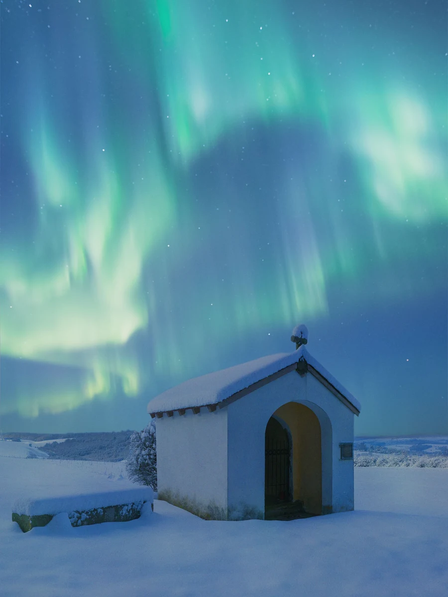

Iceland
A volcanic island where glaciers meet lava fields, and the night sky moves.
Weather
Reykjavík, right now
- Temperature
- –2°C
- Wind speed
- 18 km/h
- Wind chill
- Calculating…
Figures above are fixed for this assignment. Wind chill is calculated in the browser the moment the page loads.
An island still being made
Iceland sits on the seam between the North American and Eurasian tectonic plates, so the ground here is, quite literally, still forming. Fresh lava fields sit beside thousand-year-old moss, and a drive across the Ring Road passes waterfalls, black sand beaches, and steam rising straight out of the hillside.
Just over 390,000 people live on the island, most of them in and around Reykjavík, which leaves the rest of the country remarkably open: long stretches of road with nothing but sheep, sky, and rock.
- Capital
- Reykjavík
- Language
- Icelandic
- Currency
- Icelandic króna
- Best time to see aurora
- September – March
Worth the detour
-
The Golden Circle
A loop past Þingvellir National Park, the Geysir hot spring area, and Gullfoss waterfall — close enough to Reykjavík for a single day out.
-
Vatnajökull
Europe's largest glacier by volume, with ice caves that only open in winter and meltwater lagoons full of drifting icebergs.
-
Blue Lagoon
A geothermal spa built into a lava field, kept at a steady 37–39°C year-round regardless of what the weather above is doing.